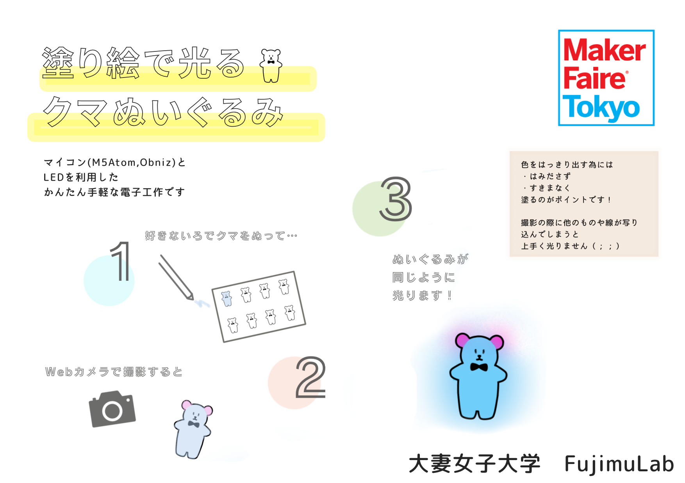
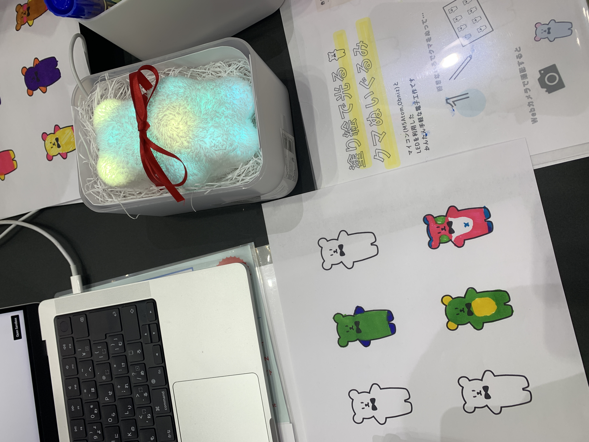

Works
作品のポートフォリオをご紹介します！
ぬりえで光るクマぬいぐるみ

MakerFaireTokyoに展示をした電子工作で、イベントに来場する子供たちに向けて制作しました。
好きな色合いでクマを塗ってWebカメラで撮影すると、同じ色同じ柄でぬいぐるみに内蔵されたLEDが光ります。
M5atomにインストールしたobnizでライトの制御を行っており、PC側のインタフェースともに言語はJavaScriptです。
使用した言語と技術
- HTML・CSS
- JavaScript
- obnizによるLED制御
《動画》
Nearby Lunch!
URLはこちら: Nearby Lunch!
現在地を取得して近隣の飲食店を近い順に表示するWebアプリケーションです。
Geolocation API、ホットペッパーAPI、Being Maps APIを使用しています。
スマートフォンからも利用可能、地図を埋め込んでおり位置も確認できるようになっています。
使用した言語と技術
- HTML・CSS
- JavaScript
- GeolocationAPI,BeingMapsAPI,ホットペッパーAPI
Grains de cafe Webサイト
URLはこちら: Grains de cafe

カフェを想定したホームページです。シンプルで優しい雰囲気を意識したデザインになっています。
フロント上部の画像はCSSでスライドショーにしてみました。
使用した言語と技術
- HTML・CSS